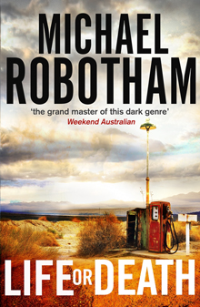

Audie Palmer has spent ten years in jail when he escapes from prison, without telling anyone of his plans.
He was sentenced after a robbery on an armoured truck led to four deaths, Audie himself horribly injured,
one man – Audie’s brother –missing and seven million dollars unaccounted for. ..
Through all of the ten years Audie has spent in prison he has suffered threats, beatings and countl
ess attempts on his life by people hoping to get their hands on the money. So, with his jail term almost over,
his actions make no sense. Why would a man about to be released escape from prison a day early when, if caught,
he could face another, harsher sentence?
During his time in prison, Audie’s closest friend has been Moss Webster. Now Moss finds himself sent to locate – and betra
y – his friend. Also on Audie’s trail is Special Agent Desiree Furness, while Sheriff Ryan Valdez (the man who nearly ki
lled Audie after the robbery), of Dreyfus County, also offers to help with the search. During this fast paced, well plott
ed and exciting thriller, we are taken through Audie’s life and discover what happened ten years ago, what Audie hopes to
accomplish, what happened to the money and why so many people want him dead?
I really enjoyed this novel, peopled with sympathetic main characters and which did not let down the pace from start to f
inish. This really is a roller coaster ride in every sense of the world and yet the author effortlessly holds together al
l the different strands of the plot; both past and present. If you enjoy really well written thrillers, then you will cer
tainly enjoy this. I have never read anything by this author before, but as this is a stand-alone novel it is a great
introduction to his work and I will certainly be reading more by him in the future.
Click me to buy Life or Death by Michael Robotham!